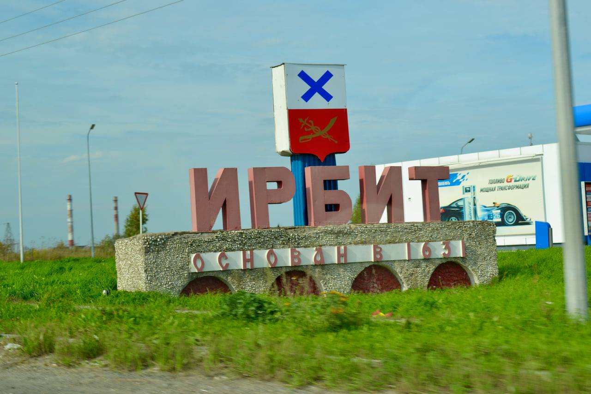
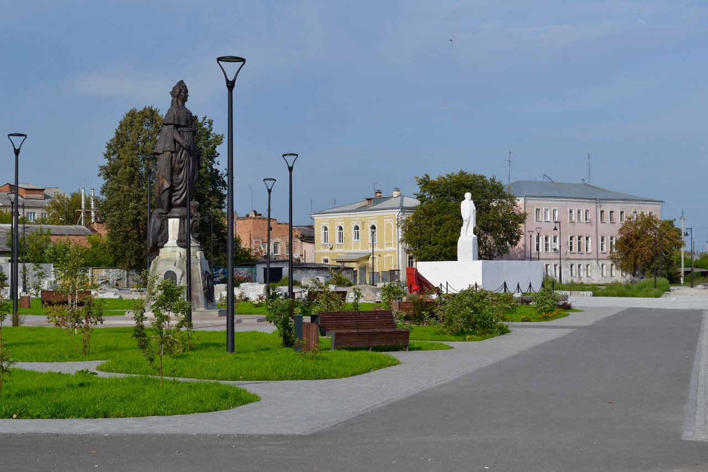
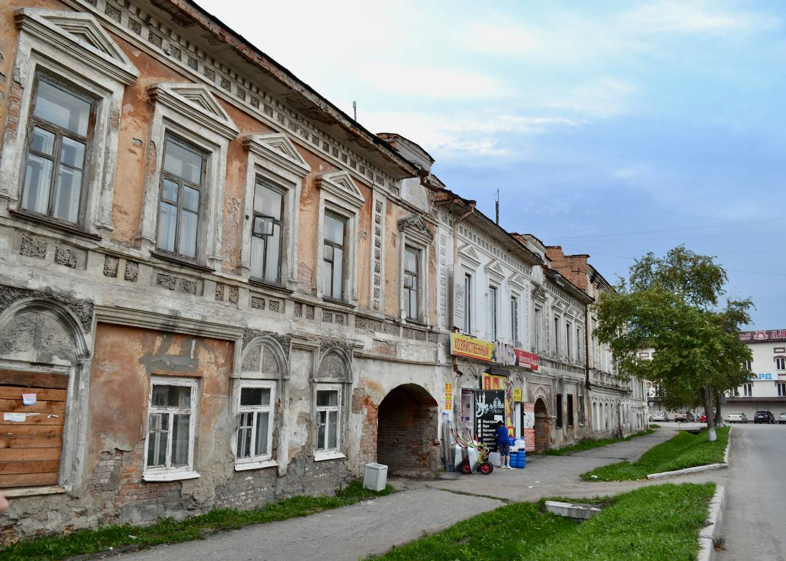
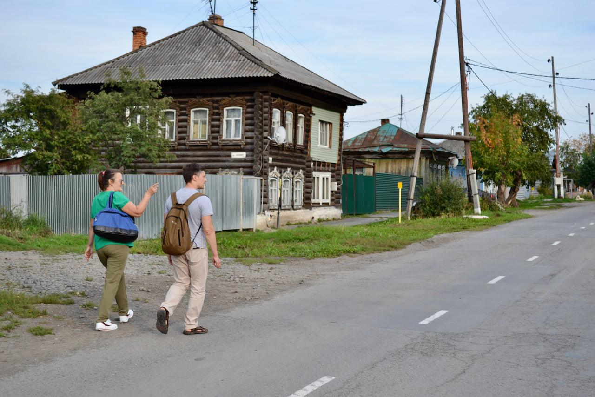
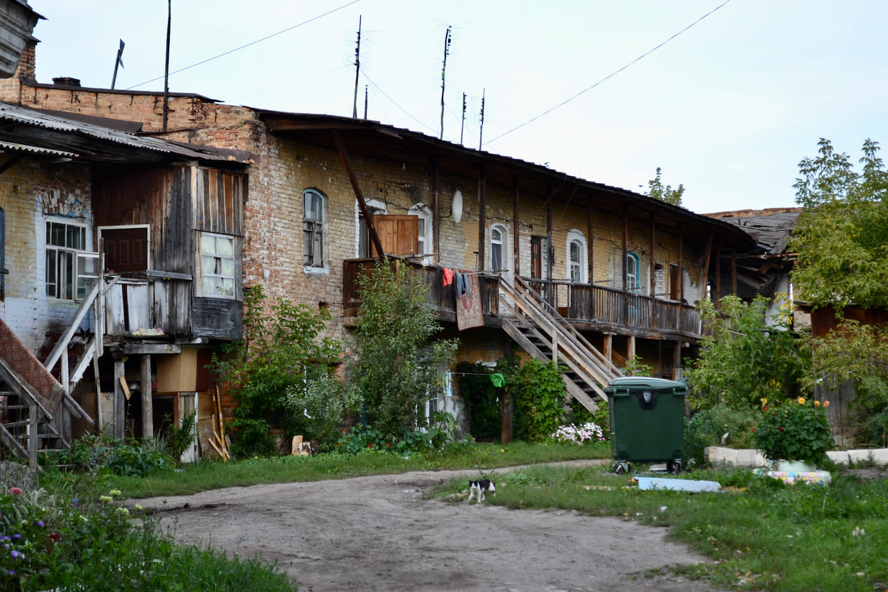
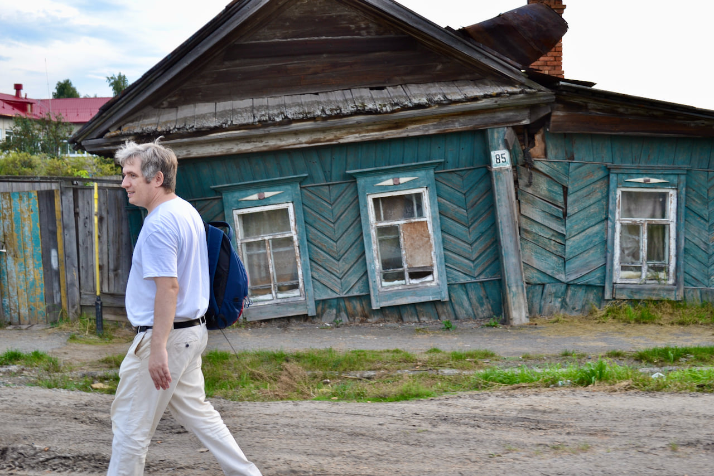
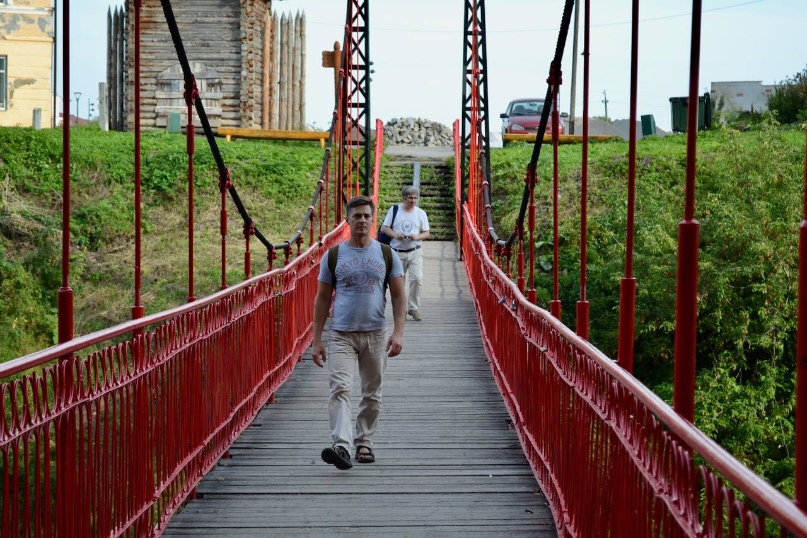

Панорама Ирбита при подъезде с востока
Ирбит становился как проекция торговый путей из Сибири в Европейскую часть России. Здесь проходила крупнейшая после Нижегородской ярмарка в стране. Поэтому город жил в необычном ритме: большую часть года он пустел, а в дни ярмарки наполнялся жизнью, приносимой с собою выходцами из разных концов империи.
При взгляде на карту Ирбит удивляет аккуратной сеткой кварталов, столь не характерной для российских городов. Воплощая собой город эпохи модерна, он выстроен вокруг торговой площади с памятником просвещенной императрице Екатерине II, даровавшей Ирбиту статус города. Недалеко суд, тюрьма и прочие казенные учреждения. От площади лучами отходят главные улицы, пересекаемые рядом параллельных дорог.
Ирбит - также один из центров первого в Сибири сельскохозяйственного района. В тюменских кофейнях капучино делают именно на Ирбитском молоке - оно даёт более густую и плотную пенку. В советское время Ирбит - город заводов, главнейший из которых - мотоциклетный, где производили знаменитые “Уралы”. Трубы завода доминируют в панораме города при въезде с восточной стороны. На торговой площади Екатерину сменил Ленин с настолько несоразмерно огромной головой, что, кажется, и он в мотоциклетном шлеме. Да и сама площадь перестала быть центральной, уступив эту роль бульвару Победы - географическому центру разросшегося города.
В постсоветский период упадок промышленности, депопуляция и руинизация архитектурного наследия накрыли Ирбит налетом разрухи. Порой даже чувствуешь себя неловко, когда фотографируешь очередные исторические “бараки”, покосившиеся дома и прочий “ужас” местных жителей. Добавляет атмосферы и нездоровая плотность сидящих на кортоках полуголых мужчин в татуировках. Впрочем, мои спутники, не раз бывавшие в Ирбите, говорили, что никогда прежде не видели город настолько опрятным и позитивным. Екатерину вернули на место. До города добралось непереводимое blagoustroistvo в виде брусчатки, свежего асфальта и строительных лесов. Многие здания покрыла свежая краска. На острове за Пассажем открылся очищенный от бурелома и кустарника Старый парк. По вечерним улицам гуляет молодежь.
    
 
Оригинальный текст:
https://www.facebook.com/alexander.sheludkov/posts/10224015018426919